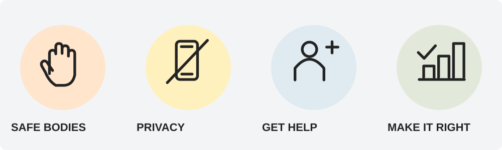

Week 8 · Thursday Sep 24 · Welcome
Mistakes do not have to become patterns.
Week 8 · Thursday Sep 24 · Regulate
1. Stop your body. 2. Feel your feet. 3. Get ready to be honest.
Week 8 · Thursday Sep 24 · Orient
STOP — End it.
TELL THE TRUTH — Say what you did.
FIX WHAT YOU CAN — Follow the repair plan.
DO BETTER — Make a different choice next time.
Week 8 · Thursday Sep 24 · Connect · Look

We keep hands and bodies safe.
We protect privacy.
We get help when someone needs it.
We make things right when we cause harm.
What would we SEE if each covenant line were true?
Week 8 · Thursday Sep 24 · Connect · Share
What can someone DO after they hurt or scare another person?
Week 8 · Thursday Sep 24 · Practice
Instead of: “I was just playing.”
Try: “I pulled your shirt after you told me to stop. That was not okay. I will keep my hands in my space.”
Task: Point to the part that tells the truth. Point to the part that changes next time.
Week 8 · Thursday Sep 24 · Commit
I will protect bodies and privacy by ____.
Week 8 · Thursday Sep 24 · Transition
Respect bodies. Protect privacy. Get help. Make things right.